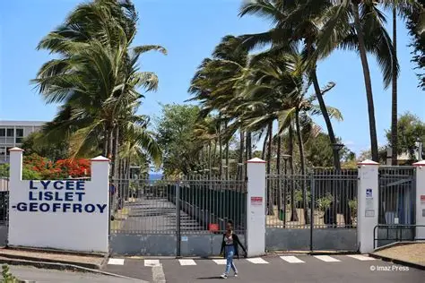
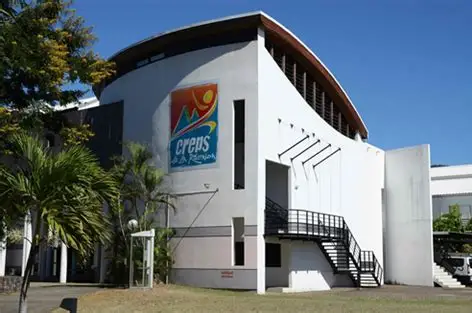
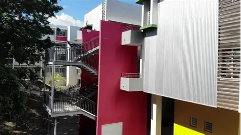
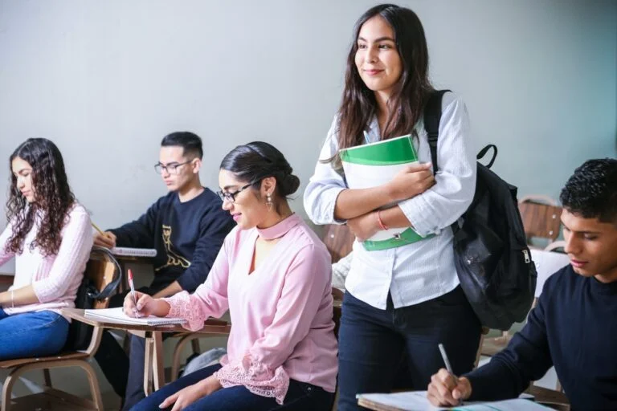
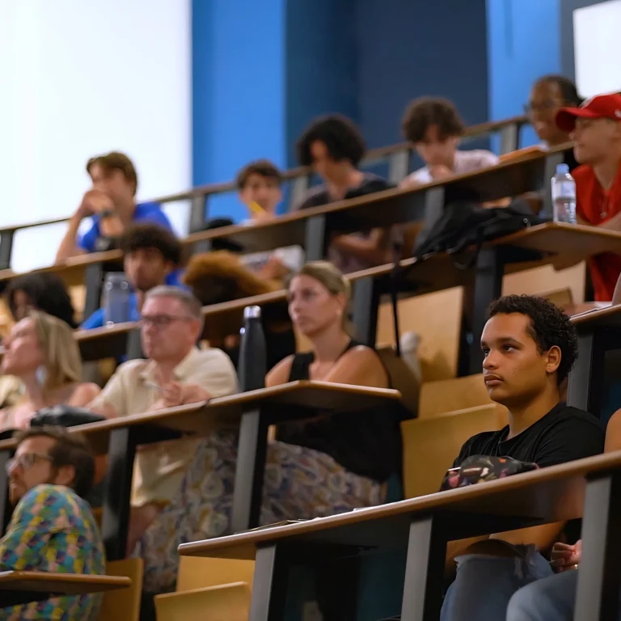

Bienvenue au lycée Lislet Geoffroy
Le lycée Lislet Geoffroy, situé à Saint-Denis de La Réunion, propose des formations variées de la seconde au BTS, alliant excellence académique et ouverture sur le monde professionnel.

Du tronc commun de Seconde aux spécialités de Terminale, notre lycée propose des parcours adaptés à chaque profil et ambition. Découvrez notre offre en voie générale, ainsi que nos filières scientifiques et technologiques, pour construire un projet scolaire solide et personnalisé.
En savoir plus
Nos formations post-bac s’adressent aux bacheliers des troies voies : générale, technologique et professionnelle. Elles facilitent l’insertion dans la vie active ou la poursuite d’études supérieures, notamment en écoles d’ingénieur, grâce à une offre diversifiée et exigeante.
En savoir plus